Actualmente es fundamental aprovechar herramientas gratuitas de Sistemas de Información Geográfica (SIG) como QGIS para graficar y analizar redes de telecomunicaciones de manera eficiente.
Con QGIS, puedes visualizar sectores de antena específicos, realizar análisis de cobertura, interferencia y planificación, con funcionalidades similares a herramientas propietarias como MapInfo o ArcGIS, pero con la flexibilidad y bajo costo del software open-source.
- ✅ Gratuito y de código abierto
- ✅ Soporte multiplataforma (Windows, Mac, Linux)
- ✅ Amplia comunidad y plugins especializados
- ✅ Integración con PostgreSQL/PostGIS para análisis avanzado
1 Instalación de QGIS
Si aún no tienes QGIS instalado, puedes descargarlo gratuitamente desde el sitio oficial:
Recomiendo descargar la versión Long Term Release (LTR) para mayor estabilidad en entornos de producción.
2 Instalación del complemento Shape Tools
El plugin Shape Tools nos permitirá generar sectores circulares (pie wedges) a partir de parámetros de antena como azimut, tilt y radio.
Proceso de instalación:
- Abre QGIS y ve a
Complementos → Administrador e instalador de complementos - En la pestaña "Todos", busca: Shape Tools
- Selecciona el plugin y haz clic en Instalar complemento

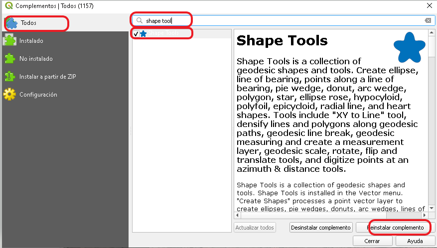
Nota: Si no encuentras el plugin, verifica que tengas habilitados los repositorios oficiales en Configuración → Repositorios.
3 Preparación de la plantilla CSV
Para generar los sectores, necesitamos un archivo CSV con los parámetros técnicos de cada celda. La estructura mínima requerida es:
| Campo | Tipo | Descripción | Ejemplo |
|---|---|---|---|
SITE_ID |
Texto | Identificador único del sitio | LA_PAZ_001 |
CELL_ID |
Texto | Identificador de la celda | LA_PAZ_001_A |
LATITUD |
Decimal | Coordenada Y en WGS84 | -16.500123 |
LONGITUD |
Decimal | Coordenada X en WGS84 | -68.150456 |
AZIMUT |
Entero | Dirección principal de la antena (0-360°) | 120 |
SIZE |
Decimal | Radio del sector en metros | 1500 |
PCI |
Entero | Physical Cell Identity (LTE) | 150 |
Carrier |
Texto | Banda de frecuencia | Band3_1800 |
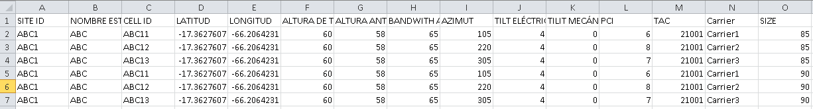
- Usa punto (.) como separador decimal, no coma
- Guarda el archivo con codificación UTF-8 para caracteres especiales
- Para multi-portadora, agrega columnas adicionales como
EARFCNoBand - Incluye KPIs como
RSRP_avgoThroughput_DLpara visualización temática
4 Carga de datos en QGIS
Sigue estos pasos para importar tu archivo CSV como capa de puntos:
- Ve a
Capa → Añadir capa → Añadir capa de texto delimitado - Nombre de archivo: Busca y selecciona tu archivo .csv
- Codificación: Selecciona
UTF-8oISO-8859-1(para caracteres como Ñ) - Formato de archivo: Elige el delimitador correcto (
;o,) según tu configuración regional - Definición de geometría:
- Tipo de geometría: Coordenadas del punto
- Campo X:
LONGITUD - Campo Y:
LATITUD
- SRC de la geometría: Selecciona
EPSG:4326 - WGS 84 - Verifica la vista previa y haz clic en Añadir → Cerrar
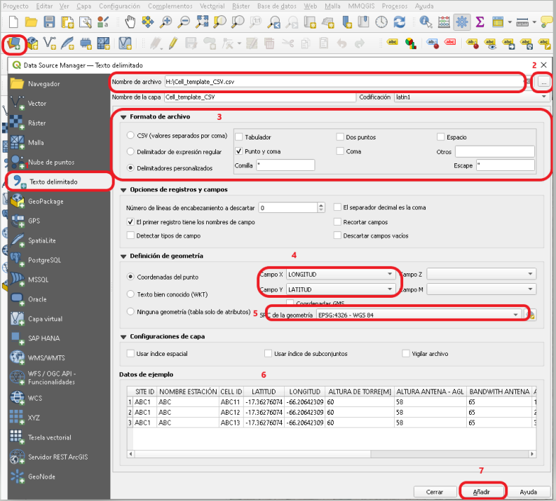
⚠️ Solución de problemas: Si los puntos no se visualizan correctamente, verifica que el separador decimal de tu sistema operativo coincida con el del archivo CSV. En Windows: Panel de Control → Región → Configuración adicional → Separador decimal.
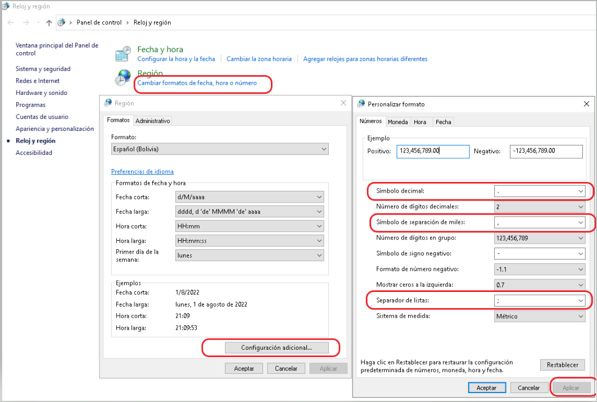
5 Generación de sectores con Shape Tools
Ahora crearemos los sectores circulares usando el plugin instalado:
- Abre la Caja de herramientas de procesamiento (
Ctrl+Alt+T) - Navega a:
Shape Tools → Create Pie Wedge - Configura los parámetros:
- Input Point Layer: Selecciona tu capa de puntos CSV
- Azimuth Field: Selecciona el campo
AZIMUT - Radius Field: Selecciona el campo
SIZE(radio en metros) - Ending Azimuth: Configura la apertura del sector (ej:
65para 65°) - Radius Units: Selecciona
Meters
- Haz clic en Ejecutar
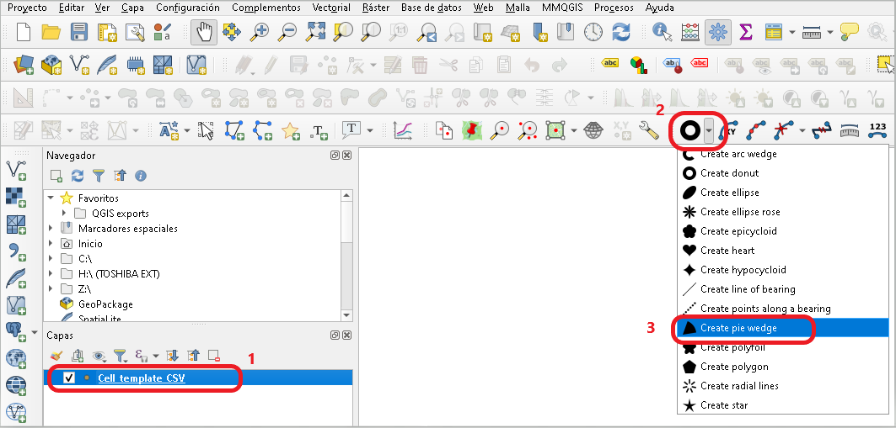
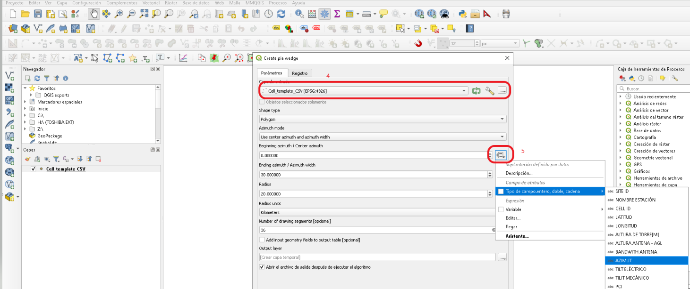
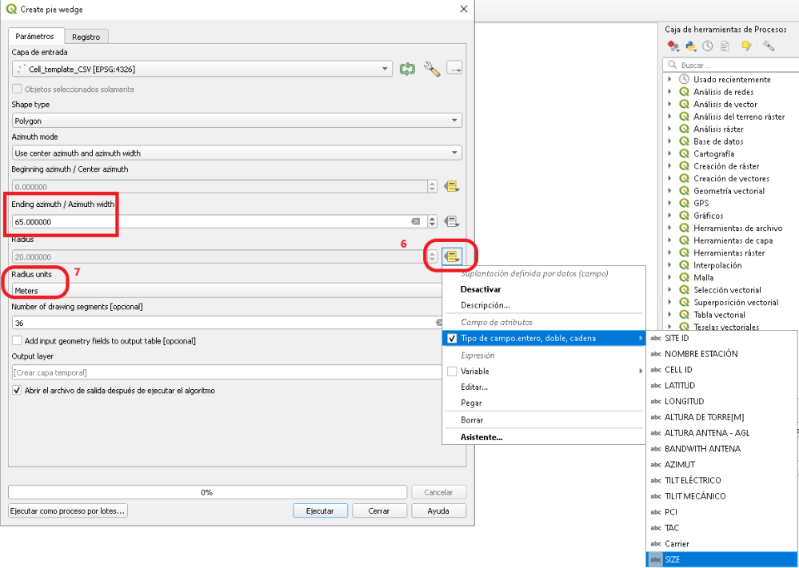
Estilización opcional:
Para mejorar la visualización, puedes aplicar reglas de estilo basadas en PCI, banda de frecuencia o KPIs:
-- Ejemplo: Color por banda de frecuencia
CASE
WHEN "Carrier" LIKE '%Band1%' THEN '#e74c3c' -- Rojo para 2100 MHz
WHEN "Carrier" LIKE '%Band3%' THEN '#3498db' -- Azul para 1800 MHz
WHEN "Carrier" LIKE '%Band7%' THEN '#2ecc71' -- Verde para 2600 MHz
ELSE '#95a5a6'
END6 Agregar mapa de fondo con QuickMapServices
Para contextualizar los sectores con imágenes satelitales o mapas base:
- Instala el plugin QuickMapServices (mismo proceso que Shape Tools)
- Ve a
Web → QuickMapServices → Settings → More services - Haz clic en Get contributed pack y luego Guardar
- Activa el mapa deseado:
Web → QuickMapServices → Google → Google Satellite
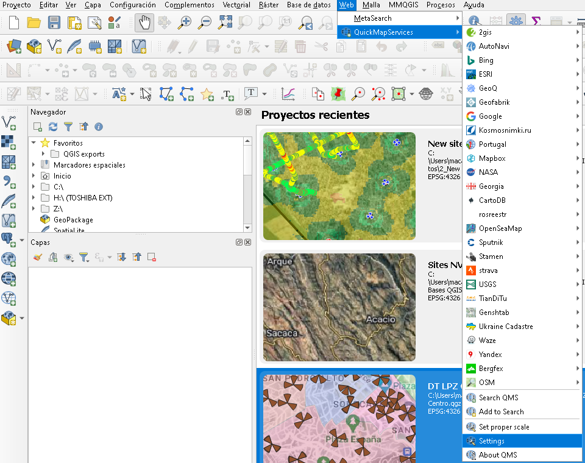
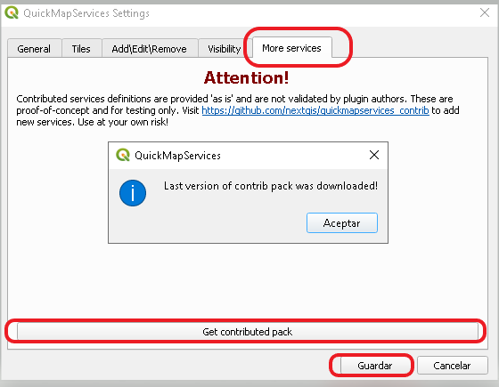
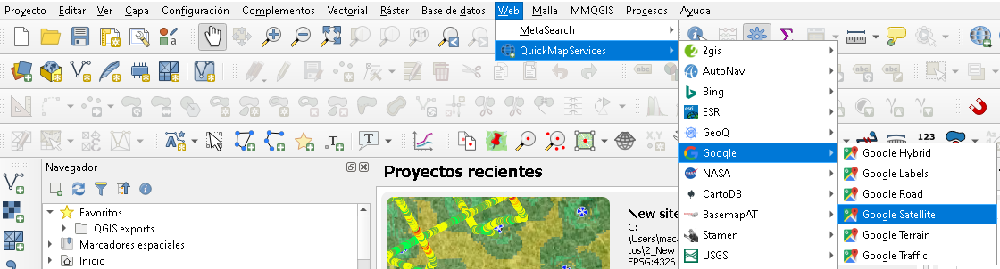
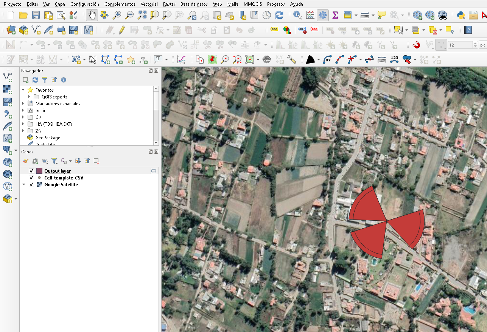
7 Resultado final y exportación
¡Listo! Ahora tienes una visualización profesional de tus sectores RF con contexto geográfico. Puedes:
- Exportar a imagen:
Proyecto → Importar/Exportar → Exportar mapa como imagen - Generar reporte PDF: Usa el Compositor de Impresión para layouts profesionales
- Compartir como proyecto: Guarda como
.qgzpara colaboración con tu equipo - Automatizar: Usa PyQGIS para generar reportes masivos desde Python
🚀 Próximo nivel: Integra esta visualización con tus dashboards de KPIs usando OptiNetDB para análisis geoespacial automatizado.
Conclusión
QGIS es una herramienta poderosa y accesible para ingenieros de telecomunicaciones que necesitan visualizar y analizar redes RF sin depender de licencias costosas. Con los complementos adecuados y una estructura de datos bien definida, puedes crear visualizaciones profesionales que facilitan la toma de decisiones técnicas.
Espero que este tutorial sea de utilidad para tu trabajo diario. Si tienes preguntas o sugerencias, ¡no dudes en compartirlo en tu red profesional o contactarme directamente!
Comentarios
Los comentarios están deshabilitados temporalmente. Para preguntas técnicas, contáctame directamente por email o LinkedIn.